Steward
分享是一種喜悅、更是一種幸福
手機 - Nokia N900 - USB、UART改造(2)
司徒懶得購買USB A接頭，因此，直接從小米行動電源拆下來使用
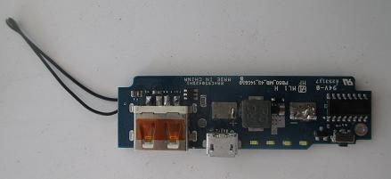
PCB
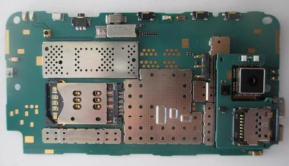
腳位
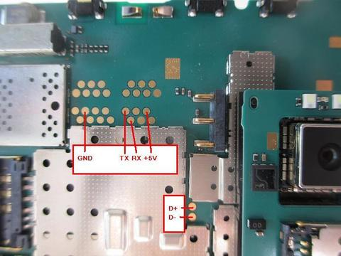
跳線
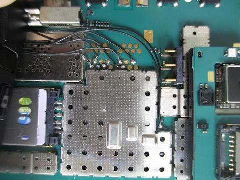
膠帶固定
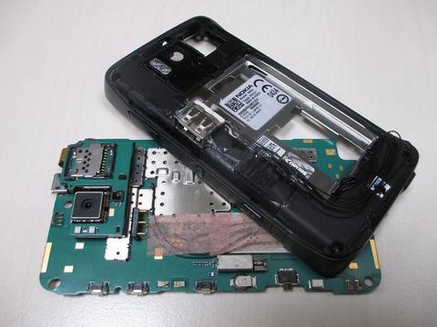
從電池底部拉出OK線
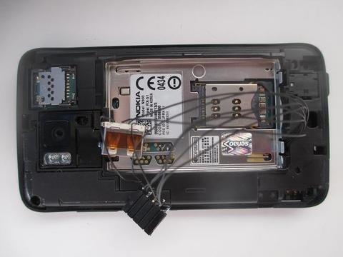
使用三秒膠固定USB A和UART排線(+5V, RX, TX, NC, GND)
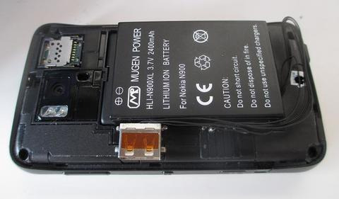
擺放位置
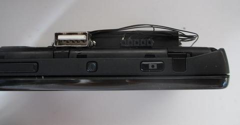
使用AB膠加強固定
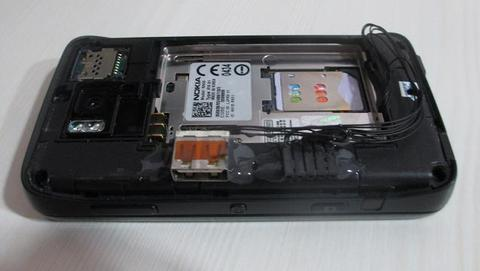
上厚電的樣子
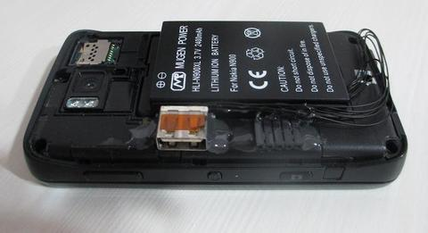
完成
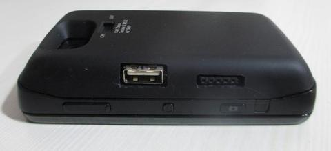
開啟工程模式和Serial Interface
C:\Program Files\maemo\flasher-3.5> flasher-3.5.exe --enable-rd-mode C:\Program Files\maemo\flasher-3.5> flasher-3.5.exe --set-rd-flags=serial-console
UART輸出訊息(115200 bps)
NOLO X-Loader (v1.4.14, Jun 3 2010) Secondary image size 109384 Booting secondary [ 0.002] Nokia OMAP Loader v1.4.14 (Jun 3 2010) running on Nokia N900 F5 (RX-51) [ 0.014] I2C v3.12 [ 0.033] System DMA v4.0 [ 0.036] OneNAND device ID 0040, version ID 0031 (256 MiB, 83 MHz) [ 0.070] OneNAND blocks unlocked in 27912 us [ 0.075] Flash id: 204031 [ 0.097] Partition table successfully read [ 0.104] Kernel rebooted with mode 'h' [ 0.108] Reset reason: sw_rst [ 0.111] McSPI v2.1 [ 0.114] LP5523 found at I2C bus 2, address 0x32 [ 0.125] SMB138C: Not loading driver (version reg. 0x4b) [ 0.131] BQ24150 (rev. 3) found on I2C bus 1, address 0x6b [ 0.137] SSI version 1.0 [ 0.151] Battery voltage 4.048 V, BSI: 1029 [ 0.165] Initializing LCD panel [ 0.168] Detecting LCD panel moscow [ 0.172] Panel ID: 108d77 [ 0.175] Detected LCD panel: acx565akm [ 0.179] DISPC: version 3.0 [ 0.184] LCD pixel clock 24000 kHz [ 0.215] Logo drawn in 5 ms (11700 kB/s) [ 0.345] Über-cool backlight fade-in took 9 ms [ 0.352] Initializing USB [ 0.360] No USB host detected [ 0.363] Loading kernel image info Loading kernel (1961 kB)... done in 64 ms (30251 kB/s) [ 0.437] Loading initfs image info [ 0.441] Total bootup time 444 ms [ 0.445] Serial console enabled U-Boot 2013.04 (Apr 20 2013 - 11:00:56) OMAP3530-HS ES3.1, CPU-OPP2, L3-165MHz, Max CPU Clock 600 MHz Nokia RX-51 + LPDDR/OneNAND I2C: ready DRAM: 256 MiB MMC: OMAP SD/MMC: 0, OMAP SD/MMC: 1 Using default environment In: vga Out: vga Err: vga Uncompressing Linux................................................................................................................... done, booting the kernel.